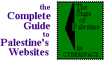

israeli websites
Click the 'websites about palestine' image, above right, to return to the index.

Advertisement: Click here
Government
- The Knesset (The Parliament of Israel): http://www.knesset.gov.il/
- The Israeli Foreign Affairs Ministry: http://www.israel.org/
- Israel Prison Service: http://www.geocities.com/TimesSquare/5432/index.html
- This unofficial site for the Israel Prison Service greets you with a counter, saying "You are inmate number ### "visiting" here....(since Sept. 26, 1996)." The site stresses that all the information included is culled from official IPS releases. The information in the site does NOT include information and data from military prisons, and omits the 5,000 plus Palestinians held as political prisoners in Israeli jails. And now for some fun stats included in the site: of the 6716 Israelis in prison, only 11.5% serve sentences longer than 10 years, and most were convicted of drug (21%) and property (33.2%) offences. Of 1781 West Bank & Gaza residents, 58.9% serve sentences greater than 10 years, and 70.2% were convicted of "Security offences." Reviewed by Michael O'Neill / Added to Complete Guide: 17 May 1997
Political
- Likud Party: http://usa.likud.org.il/
- Official homepage for the Likud Party, Israel's mainstream, center-right (for Israel) political party. Benjamin Netanyahu, Menachem Begin and Ariel Sharon are a few of Likud's luminaries. Be forewarned, sometimes this link doesn't work. Reviewed by Michael O'Neill / Added to Complete Guide: 17 May 1997
- Labor Party: http://www.inter.net.il/~avoda/
- Official homepage for the Labor Party, Israel's mainstream, center-left (for Israel) political party. Yitzhak Rabin, Golda Meir, and Shimon Peres are a few of Labor's luminaries. Reviewed by Michael O'Neill / Added to Complete Guide: 17 May 1997
- Meretz Bloc: http://www.meretz.israel.net/
- The official homepage for the Meretz Bloc, a small, left-wing coalition that is one of the Knesset's strongest advocates for civil rights and a just peace. The English section of the site is under construction, but still has some useful information for those of us who don't read Hebrew. Reviewed by Michael O'Neill / Added to Complete Guide: 17 May 1997
- Israeli Communist Party: http://www.gezernet.co.il/chadash.html
Media
- The Jerusalem Post: http://www.jpost.co.il/ -
Yahoo described the Jerusalem Post's site as "the most polished of the foreign news sites we saw, provid[ing] thorough and even-handed weekly news coverage of Israel and the Middle East." The site is rated the 6th most visited site world-wide and its number of hits per annum reaches the tens of millions. As a regular reader of the Post's print edition, I find this a bit disheartening. The paper could only be considered even-handed by members of the Likud Party (e.g. the weather map's political boundaries don't recognize a difference between the West Bank, Gaza or the Golan. Only the Golan and East Jerusalem have been annexed as part of Metropolitan Israel). As for polished, well... I always get a kick out of finding the rare typo or grammar error in the New York Times. With the Post, the complete lack of properly edited text gets rather tiring. But you read it because you have to. There's nothing else in English here. Reviewed by Michael O'Neill / Added to Complete Guide: 17 May 1997
- Ha'aretz: http://www.haaretz.co.il/eng/
- Ha'aretz may not have the widest circulation among Hebrew dailies, but it has always been considered the leading intellectual Hebrew daily. It's pages are rich with columns and articles written by Israel's foremost academics and politicians, but if you don't read Hebrew, you're out of luck. That is, until now. Ha'aretz's new website features English translations of top news stories and a handful of editorials and op-ed pieces. The unbiased news coverage is also a relief after reading the less-than-balanced pages of the Jerusalem Post. Of course, a photo or two would be a nice addition to the text, but let's not be picky. A must for daily coverage of events in the region. Reviewed by Michael O'Neill / Added to Complete Guide: 17 May 1997
- Ariga: http://www.ariga.com/ - Website of a publishing company run by writer Robert Rosenberg, including links to news, peace, human rights, arts and culture sites. The website is stuffed full of an enourmous amount of links to information about Israeli and Palestinian sites, the latter even including webpages designed by Ariga for Palestinians organizations that haven't got a web presence. Thanks for putting us out of a job, Bob! Ariga is a Hebrew word meaning "weave," as in Web. Reviewed by Nigel Parry / Added to Complete Guide: 17 May 1997
- BibiWatch: http://www.ariga.com/bibiwatch/ - BibiWatch, run by Israeli left-winger Eric Lee, is one man's crusade against Benyamin "Bibi" Netanyahu. Eric goes after Bibi with the same kind of gleeful dedication as a terrier chasing a weasal into its burrow. Daily diatribes make uncomfortable points that I am convinced would cause Bibi to lose sleep, that is, if he had any time to surf the Web instead of dealing with his latest corruption scandal. Lee is the organizer of the Israeli Internet Blackout on 29 May 1997. Michael has taken to whining that the site isn't as funny as the name would suggest. I agree. Reviewed by Nigel Parry / Added to Complete Guide: 17 May 1997
- Arutz-7: http://www.jer1.co.il/media/arutz7/ - Arutz-7 is a pirate radio station run out of the Beit El settlement outside of Ramallah that has gone Internet. Always good for a few outrageous statements. Reviewed by Michael O'Neill / Added to Complete Guide: 17 May 1997
Education
Settlers & Settlements
- The Yesha Council of Judea, Samaria and Gaza: http://www.yesha.virtual.co.il/ - Yesha is an umbrella organization that represents all settlement communities on the national level. This site includes a comprehensive list of settlements in the West Bank and Gaza with some background information on each. Reviewed by Michael O'Neill / Added to Complete Guide: 17 May 1997
- The Jewish Community of Hebron: http://www.virtual.co.il/communities/israel/hebron/ - Hebron's Jewish settlers are perhaps the most famous (some would say infamous) of Israel's West Bank settlers. This site provides all sorts of information about Hebron's history, the current political situation through the eyes of the settler community, and tourism opportunities. We wouldn't recommend touring with the settlers, for your own safety and sanity. Reviewed by Michael O'Neill / Added to Complete Guide: 17 May 1997
- Oz Veshalom-Netivot Shalom: http://www.ariga.com/ozveshalom/ - The friendly, reasonable face of religious Zionism, includes an interesting plan for settlers to keep only 7% of the West Bank, thereafter happily ascenting to a Palestinian state in the remaining 93% of the West Bank and all of Gaza. Reviewed by Nigel Parry / Added to Complete Guide: 17 May 1997
Internet Service Providers

Text only links for websites in Palestine:
| home | academic & research | education | government & services |
| human rights | internet services | media | personal homepages | travel & tourism |
| websites about palestine | internet search engines | the palestine archive |
| add your url | golden olive awards? | advertise on this site |
The Complete Guide is maintained by the Birzeit Webmaster, webmaster@birzeit.edu